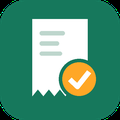

Privacy Policy
Last updated: 23 November 2026
English
Who we are
MijnBonBot is a Telegram bot operated from the Netherlands. Contact: andr.homeservice@gmail.com.
What data we process
- Your Telegram user ID and the company name or KvK number you enter.
- Documents you send: photos, PDF and Word files of receipts and invoices.
- Data read from those documents: date, supplier or client name, invoice number, amounts and VAT.
- If you connect Google Drive: your Google e-mail address and an access token.
Why
Only to provide the service: to sort your documents, keep totals, create ZIP exports and keep a copy on your Google Drive. We do not use your data for advertising, we do not sell it and we do not share it with anyone except the processors listed below.
Where it is stored
- On our server in the EU (Hetzner, Germany).
- On your own Google Drive, if you connect it.
Processors
- Telegram — delivers messages and files between you and the bot.
- Anthropic (Claude API) — document images are sent to read the text and amounts. Anthropic does not use this data to train its models.
- Hetzner — server hosting in Germany.
- Google — only if you connect Google Drive.
Google user data
MijnBonBot asks only for the drive.file permission and your e-mail address. With this permission the bot can see and change only the files and folders it created itself; it cannot read any other files on your Drive. Your e-mail address is used only to show which account is connected. MijnBonBot’s use and transfer of information received from Google APIs adheres to the Google API Services User Data Policy, including the Limited Use requirements. Google user data is not used for advertising, is not sold and is not used to train AI models.
How long we keep it
As long as you use the bot. You can ask us at any time to delete all your data; we do this within 30 days. Files on your own Google Drive stay yours and you can delete them yourself.
Your rights
Under the GDPR (AVG) you can ask to see, correct, export or delete your data. Write to the contact address above. You can revoke Google Drive access at any time in the bot or at myaccount.google.com/permissions. You can also file a complaint with the Dutch Data Protection Authority (Autoriteit Persoonsgegevens).
Security
Connections are encrypted (HTTPS). The server is accessible only to the operator. Access keys are stored on the server and never published.
Nederlands
Wie wij zijn
MijnBonBot is een Telegram-bot die vanuit Nederland wordt beheerd. Contact: andr.homeservice@gmail.com.
Welke gegevens
- Je Telegram-gebruikers-ID en de bedrijfsnaam of het KvK-nummer dat je invoert.
- Documenten die je stuurt: foto’s, pdf- en Word-bestanden van bonnen en facturen.
- Gegevens uit die documenten: datum, leverancier of klant, factuurnummer, bedragen en btw.
- Als je Google Drive koppelt: je Google-e-mailadres en een toegangstoken.
Waarom
Alleen om de dienst te leveren: documenten sorteren, totalen bijhouden, ZIP-exports maken en een kopie op je Google Drive bewaren. Wij gebruiken je gegevens niet voor reclame, verkopen ze niet en delen ze met niemand behalve de verwerkers hieronder.
Waar
- Op onze server in de EU (Hetzner, Duitsland).
- Op je eigen Google Drive, als je die koppelt.
Verwerkers
- Telegram — bezorgt berichten en bestanden.
- Anthropic (Claude API) — leest tekst en bedragen van documenten. Anthropic gebruikt deze gegevens niet om modellen te trainen.
- Hetzner — serverhosting in Duitsland.
- Google — alleen als je Google Drive koppelt.
Google-gebruikersgegevens
MijnBonBot vraagt alleen de machtiging drive.file en je e-mailadres. Daarmee ziet en wijzigt de bot alleen bestanden en mappen die hij zelf heeft gemaakt; andere bestanden op je Drive kan hij niet lezen. Het gebruik van gegevens uit Google API’s voldoet aan de Google API Services User Data Policy, inclusief de Limited Use-vereisten. Google-gegevens worden niet gebruikt voor reclame, niet verkocht en niet gebruikt om AI-modellen te trainen.
Bewaartermijn
Zolang je de bot gebruikt. Je kunt altijd vragen om al je gegevens te verwijderen; wij doen dat binnen 30 dagen. Bestanden op je eigen Google Drive blijven van jou.
Je rechten
Volgens de AVG kun je je gegevens inzien, laten corrigeren, exporteren of verwijderen. Mail naar het contactadres hierboven. Google Drive-toegang trek je in via de bot of via myaccount.google.com/permissions. Je kunt ook een klacht indienen bij de Autoriteit Persoonsgegevens.
Beveiliging
Verbindingen zijn versleuteld (HTTPS). Alleen de beheerder heeft toegang tot de server. Toegangssleutels worden niet gepubliceerd.
Русский
Кто мы
MijnBonBot — Telegram-бот, который работает из Нидерландов. Контакт: andr.homeservice@gmail.com.
Какие данные
- Твой Telegram ID и название фирмы или номер KvK, которые ты ввёл.
- Документы, которые ты присылаешь: фото, PDF и Word-файлы чеков и инвойсов.
- Данные из документов: дата, магазин или клиент, номер инвойса, суммы и BTW.
- Если подключаешь Google Диск: твой e-mail в Google и ключ доступа.
Зачем
Только чтобы бот работал: сортировать документы, считать итоги, делать ZIP и хранить копию на твоём Google Диске. Данные не используются для рекламы, не продаются и никому не передаются, кроме сервисов ниже.
Где хранятся
- На нашем сервере в ЕС (Hetzner, Германия).
- На твоём Google Диске, если ты его подключил.
Сервисы-обработчики
- Telegram — доставляет сообщения и файлы.
- Anthropic (Claude API) — распознаёт текст и суммы на документах. Anthropic не использует эти данные для обучения моделей.
- Hetzner — сервер в Германии.
- Google — только если подключён Google Диск.
Данные Google
Бот запрашивает только разрешение drive.file и твой e-mail. С этим разрешением бот видит и меняет только те файлы и папки, которые создал сам; другие файлы на Диске он прочитать не может. Использование данных Google соответствует Google API Services User Data Policy, включая требования Limited Use. Данные Google не используются для рекламы, не продаются и не используются для обучения ИИ.
Сколько хранятся
Пока ты пользуешься ботом. В любой момент можно попросить удалить все твои данные — удалим в течение 30 дней. Файлы на твоём Google Диске остаются твоими.
Твои права
По GDPR (AVG) ты можешь посмотреть, исправить, выгрузить или удалить свои данные — напиши на адрес выше. Доступ к Google Диску отключается в боте или на myaccount.google.com/permissions. Жалобу можно подать в Autoriteit Persoonsgegevens.
Безопасность
Соединения зашифрованы (HTTPS). Доступ к серверу есть только у владельца. Ключи доступа нигде не публикуются.